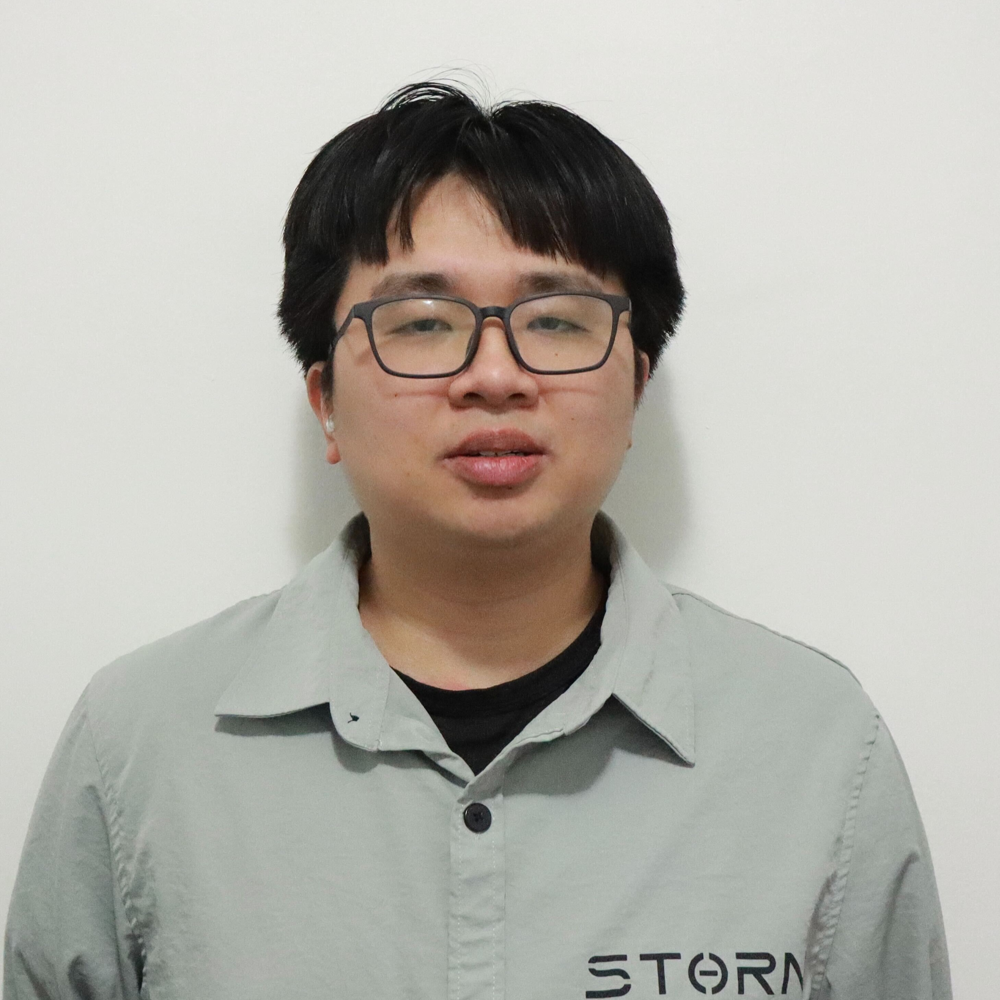
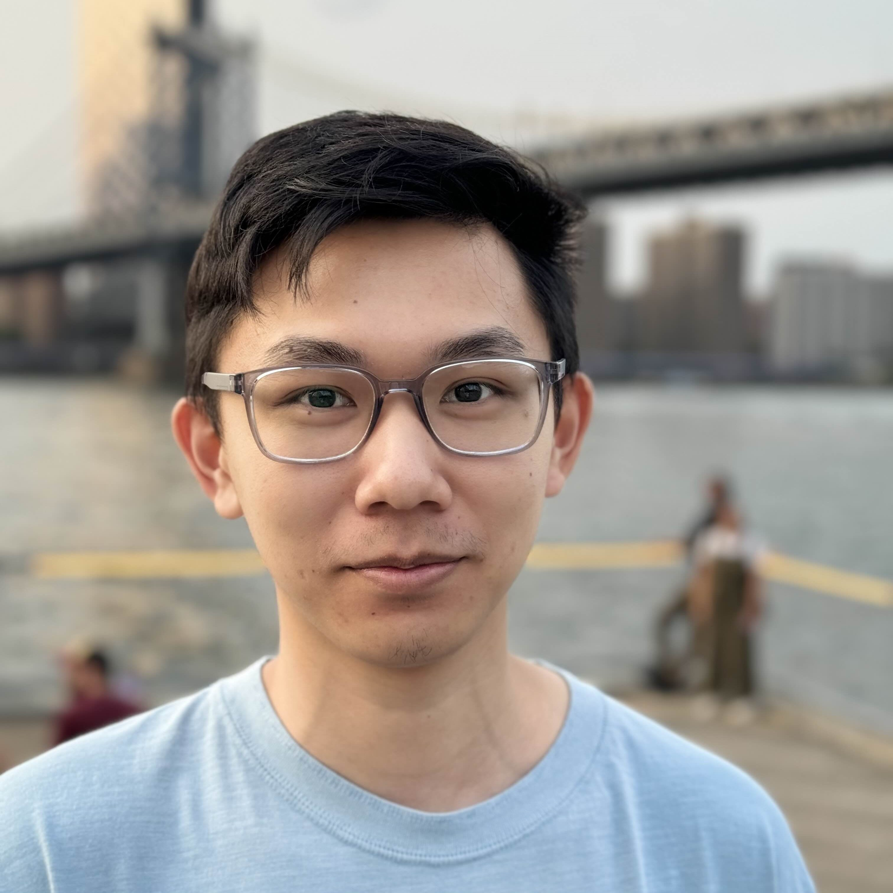
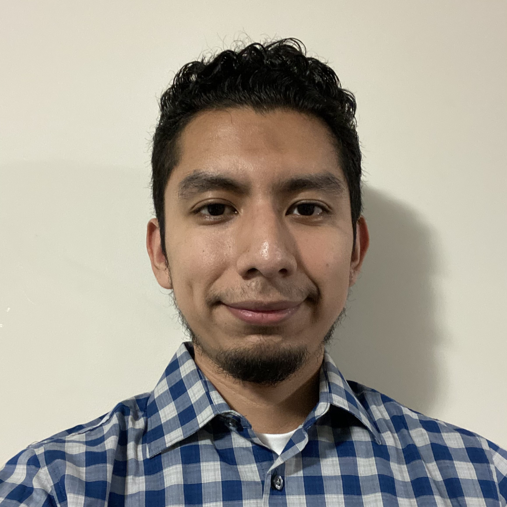
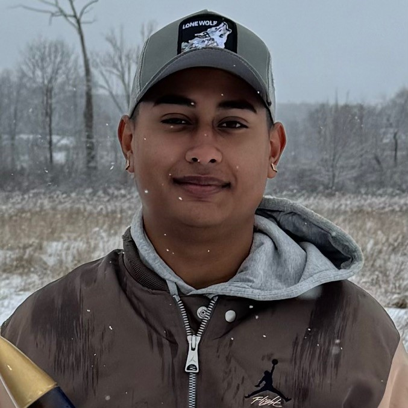
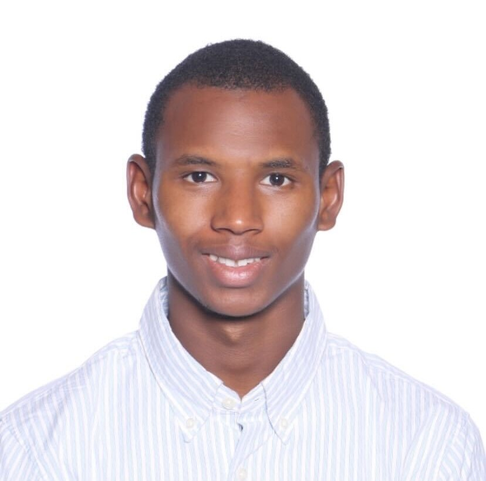
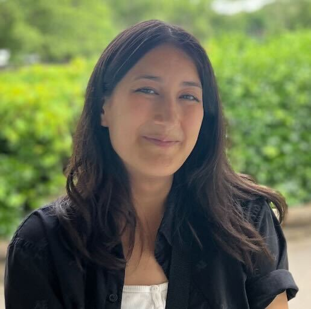
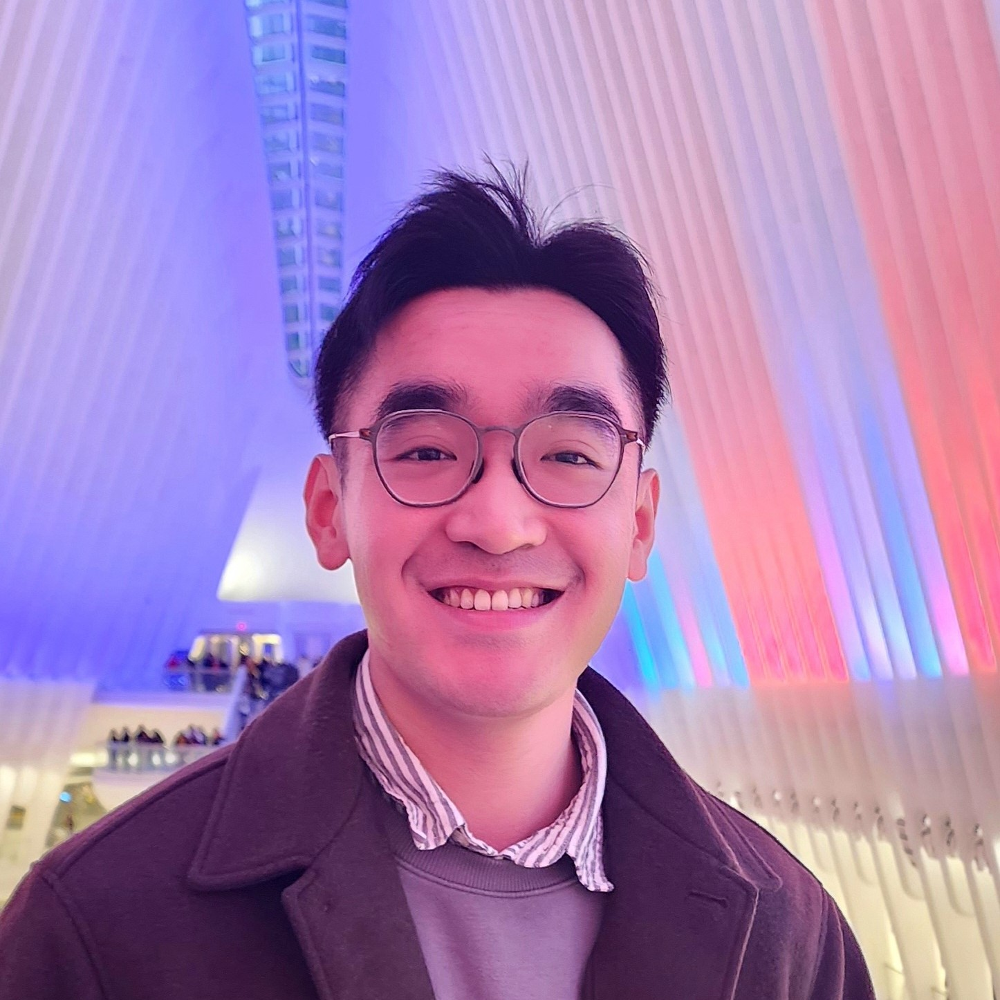
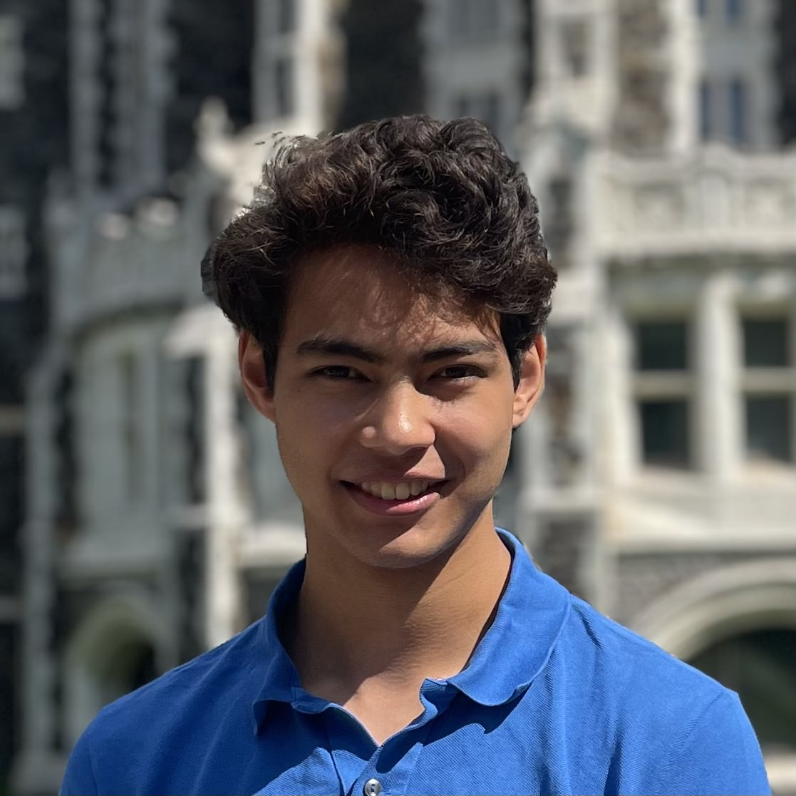
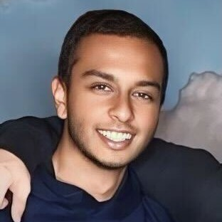

Lab Members
Principal Investigator
Bo Wang
Assistant Professor Phone: +1 (212) 650-5204 Links: ORCID, Google Scholar, ResearchGate, LinkedIn |
Graduate Students
Tianyu Han
Ph.D. Student Tianyu Han received his B.S. degree in Mechanical Engineering from Michigan State University, East Lansing, Michigan, USA, in 2020, and the M.S. degree in Mechanical Engineering form Washington University in St. Louis, St. Louis, Missouri, USA in 2021. Currently he is a Ph.D. student in Mechanical Engineering department at CCNY. His research interests include nonlinear systems, control, and underactuated systems. Email: than000@citymail.cuny.edu |
Ishvar Sitaldin
Master's Student Ishvar Sitaldin is a Master’s student in Mechanical Engineering at The City College of New York, where he also graduated Magna Cum Laude with his Bachelor's degree. His interests include robotics, control systems, and reinforcement learning, with a focus on applications in the aerospace and automotive industries. In the Autonomous Systems and Control Laboratory, his current work focuses on applying reinforcement learning techniques to enhance the autonomy and control of mobile robots. His research is complemented by his experience in the CCNY BioWear Lab, where he investigated intrinsic sensors and gained expertise in advanced manufacturing. Outside of the lab, Ishvar demonstrated strong leadership skills during his undergraduate studies, having served as the elected Secretary for the Harlem Launch Alliance and as a Peer Mentor for the S Jay Levy Fellowship. He is driven to apply his diverse research and leadership experience to develop innovative engineering solutions. Email: isitald000@citymail.cuny.edu, LinkedIn: https://www.linkedin.com/in/ishvarsitaldin/ |
|  | Junquan Wu
Master's Student My name is Junquan Wu, and I am a master's student in Mechanical Engineering at the City College of New York. I received my B.S. degree in Computer Science from CUNY Brooklyn College in 2021. My research interests focus on reinforcement learning in control systems. Email: jwu049@citymail.cuny.edu |
Yubai Liang
Master's Student Yubai Liang is pursuing her master's degree in Mechanical Engineering at CCNY, where she previously completed her bachelor's degree in the same field. She is passionate about developing innovative solutions and embracing new experiences. Email: yliang007@citymail.cuny.edu |
Alumni
2025 Spring
|  | Michael Wang
Undergraduate Student Michael Wang is a senior at The City College of New York majoring in mechanical engineering. He has an interest in aerospace, robotics, energy, and 3D printing. Currently, he is a member of AIAA and is participating in the Design-Build-Fly (DBF) competition. When he has free time, he likes to create personal projects varying from mechatronics to energy. Michael is always interested in new technologies in the engineering field such as solid-state batteries. |
|  | Adrian Garcia
Undergraduate Student My name is Adrian Garcia, and I am a senior at the City College of New York, majoring in Mechanical Engineering. I have a strong interest in automotive, aerospace, and robotics. I gained interest in engineering when I was in high school, where I participated in activities and projects that helped me explore my academic interests. In my free time, I enjoy reading, exercising, and exploring new places. I am excited to be part of the Autonomous Systems and Control Laboratory (ASCL), and I hope to learn new things and further develop my skills in mechanical engineering. I look forward to applying my skills and knowledge to develop innovative engineering solutions and face any challenges I encounter. |
|  | Fraylin Sanchez
Undergraduate Student Fraylin Sanchez is an undergraduate student pursuing his Bachelor’s degree in Mechanical Engineering at The City College of New York. Originally from the Dominican Republic, he has a strong interest in robotics, aerospace, and automation. Before college, Fraylin spent five years at Aviation High School, where he pursued FAA certification as an airframe and powerplant technician, giving him a solid background in aircraft maintenance. He is known for his enthusiasm and curiosity, always eager to tackle hands-on projects and engineering challenges. In his free time, he enjoys playing baseball, video games, and working on DIY electronics projects as he continues to develop his technical skills. |
Daniel Santiago
Undergraduate Student Daniel Santiago is pursuing his undergraduate degree in Mechanical Engineering at The City College of New York (CCNY). He is particularly interested in exploring stress analysis through Finite Element Analysis (FEA) software and seeks hands-on experience in control systems engineering, especially within robotics and aerospace projects. In his leisure time, Daniel stays active at his local recreation center and enjoys playing video games such as Fortnite and online chess. He looks forward to contributing to the Autonomous Systems and Control Laboratory (ASCL) and broadening his understanding of control theory applications. |
Matthew King
Undergraduate Student I’m a senior mechanical engineering student set to graduate this semester, with a strong interest in FEA (Finite Element Analysis). In my current senior design project, I’ve been gaining hands-on experience with CFD (Computational Fluid Dynamics). Additionally, I’m interning at a consulting firm, where I’ve been involved with control systems in building management. Outside of my studies and work, I’m passionate about playing classical piano and spend my weekends working on cars. |
2024 Fall
|  | Mohammed Bah
Undergraduate Student Mohamadou is a first-generation college student pursuing a degree in Mechanical Engineering at the City College of New York. Originally from Guinea, West Africa, he made the courageous decision to move to the United States in search of a better quality of life and more opportunities for personal and professional growth. In his free time, Mohamadou finds joy in watching Mixed Martial Arts (MMA) competitions and delving into captivating books. He has a profound fascination with robotics and thrives on engaging in hands-on activities. His passion for engineering was ignited during his time in high school when he had the privilege of being a part of the robotics club. This experience not only cultivated his interest in robotics but also solidified his determination to pursue a career in engineering. Mohamadou is grateful for the opportunities that have come his way and looks forward to making a significant impact in the field of Mechanical Engineering with his dedication, skills, and enthusiasm for innovation. |
Renato Fernandez
Undergraduate Student I'm Renato Fernandez, a dedicated and enthusiastic engineering student currently majoring in mechanical engineering at CUNY City College of New York. I have a strong interest in different types of technologies, renewable energy, and public transportation. I currently hold an outstanding GPA of 3.794 while participating in extracurricular activities. Outside the classroom, I am a member of LAESA SHPE and the CCNY Soccer club, in my free time i like to participate in soccer matches and go for long walks at Flushing Park in Queens, NY. I am driven by the desire to expand my knowledge and explore the engineering field while acquiring hands on experience. |
 |
Varin Sawh
Undergraduate Student Varin Sawh is a senior majoring in mechanical engineering with a minor in mathematics at CCNY. He is interested in infrared applications, clean energy solutions, and drone technologies. In his spare time he enjoys hiking, traveling, and writing film scripts. Email: vsawh000@citymail.cuny.edu |
|  | Hannah Lilly
Undergraduate Student Hannah Lilly is a senior majoring in mechanical engineering. She is treasurer of the Society of Women Engineers, and is interested in renewable energy, robotics, and 3D modeling. In her free time, she enjoys crocheting (manual 3D printing), penpalling, and birdwatching. Hannah is excited to learn more about new fields of engineering! |
Carlos Stalin Calle
Undergraduate Student Stalin is a senior pursuing a degree in Mechanical Engineering, with a minor in Management and Administration, at The City College of New York. He is passionate about control systems, automation, manufacturing, and design. Outside of academics, Stalin enjoys staying active by playing Ecuadorian volleyball (Ecuavolley), soccer, and working out at the gym. He is enthusiastic about bringing his skills and dedication to the Autonomous Systems and Control Laboratory (ASCL), where he aims to make a meaningful contribution. |
Christopher Colón Espinal
Undergraduate Student Christopher Colón Espinal is an undergraduate student seeking his B.E. in Mechanical Engineering at The City College of New York. His interests include control systems, stress failure theories, energy systems, and computer-aided design. He is committed to ensuring his reliability, adaptability, and communication bring success to every project he undertakes. Fueled by his love of the automotive industry since childhood he has been on the path to understanding the many mechanisms that fascinate him, applying critical thinking skills to solve any problem he may face. Christopher enjoys simulation racing, reading, and practicing guitar outside of academics. Email: ccolone000@citymail.cuny.edu, LinkedIn: www.linkedin.com/in/chriscolonespinal |
|  | Ryan Fong
Undergraduate Student Ryan Fong is a senior majoring in Mechanical Engineering at The City College of New York. He is always excited to learn something new and gets his hands dirty. With a strong interest in manufacturing and design, he currently works at The Spitzer School of Architecture as a fabrication shop college assistant, where he assists students with various machinery and design projects. In his free time, Ryan enjoys going to the gym and playing basketball. He is also very excited to learn more about robotics and is grateful for all the opportunities he has received. |
|  | Leonidas Kalpaxis
Undergraduate Student Leonidas Kalpaxis is a senior majoring in Mechanical Engineering with a minor in Mathematics. Following an internship at Bloom Energy this summer, he has become more interested in the fields of data science and automation. He is excited to develop his knowledge in these areas and hopes to apply the concepts in laboratory research during the coming months. In his free time, Leonidas enjoys folding origami models, playing chess, and going on walks. Email: lkalpax000@citymail.cuny.edu |
2024 Summer
|  | Amit Sarker
Undergraduate Student Amit Sarker is a senior in Mechanical Engineering at the Grove School of Engineering. He specializes in programming with an interest in developing software to control hardware systems. His academic focus includes integrating programming with engineering principles, with the desire to demonstrate a solid understanding of both fields. He is known for his effective problem-solving skills, and a collaborative approach to projects. Amit continues to build on his technical skills in his free time and create solutions to real world problems. |